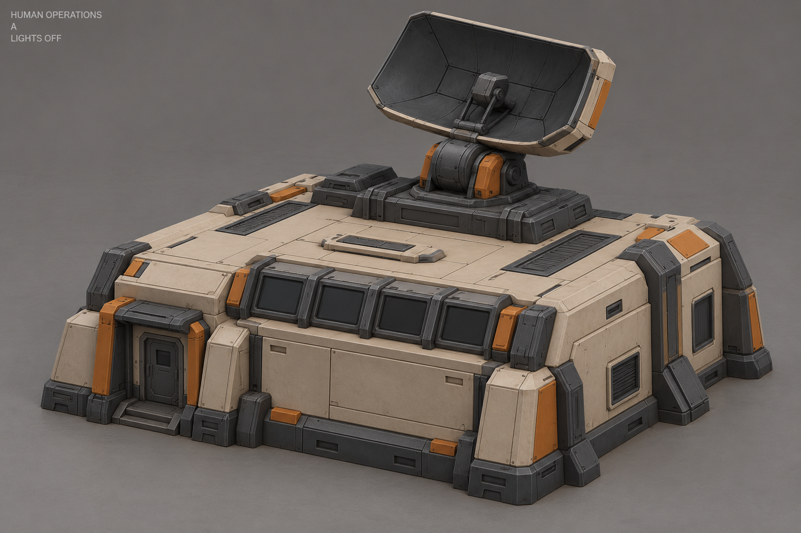
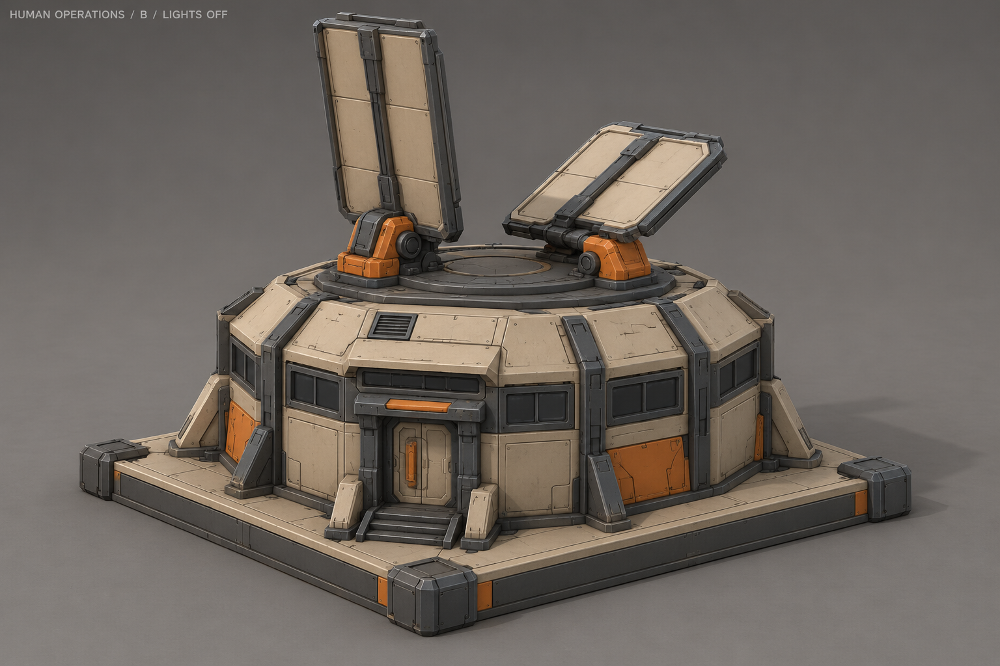
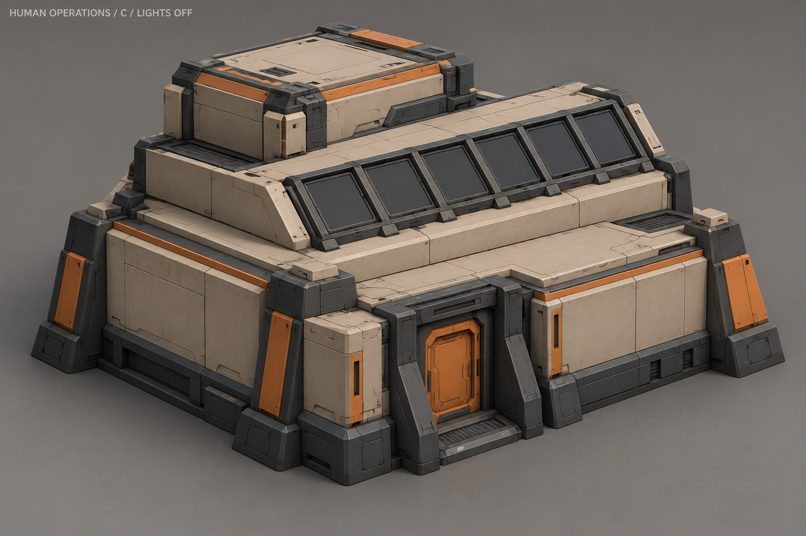
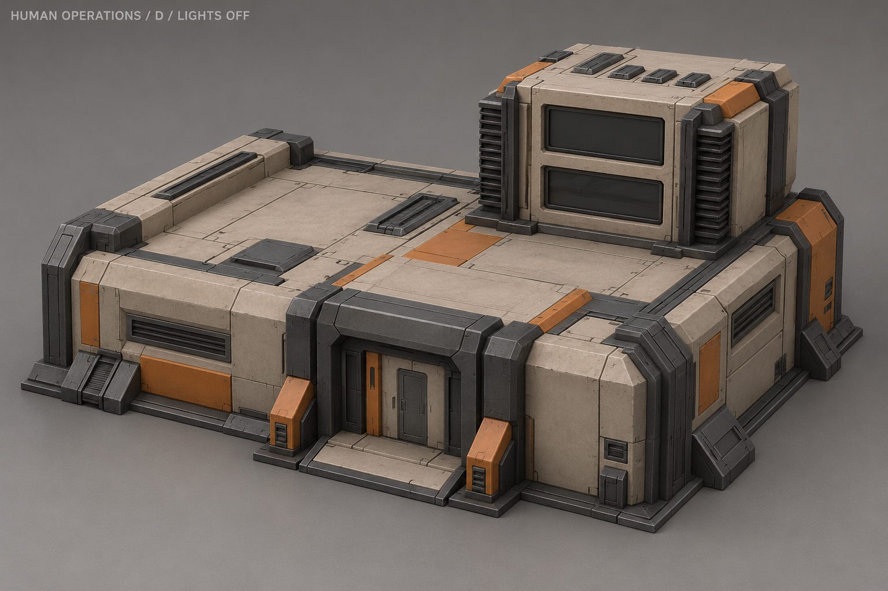
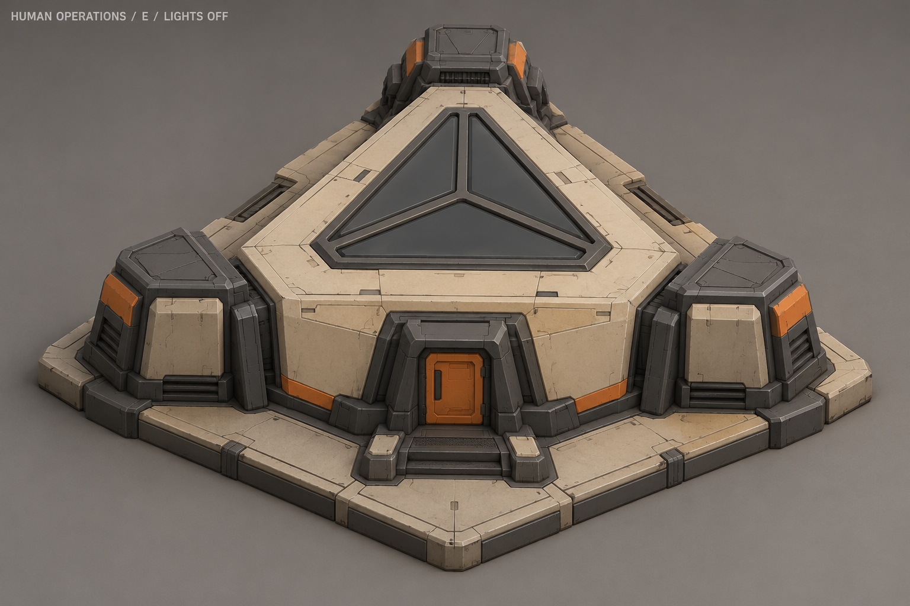
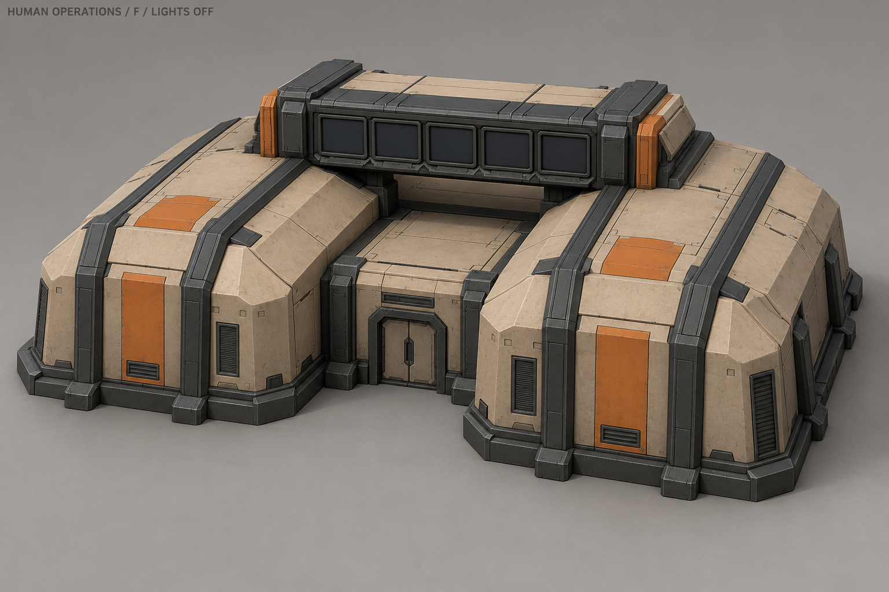
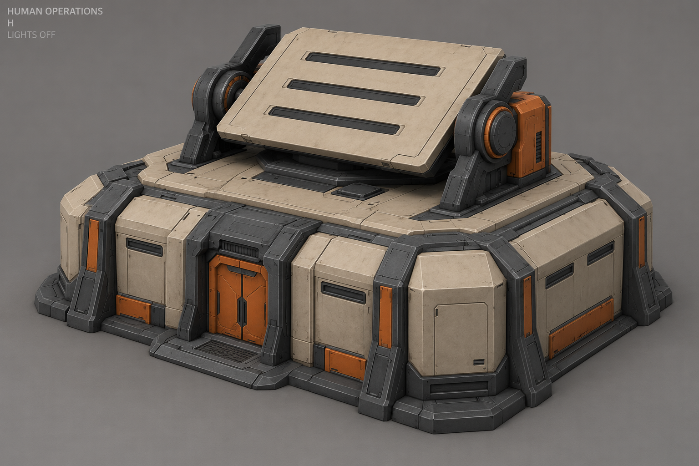

A «Наведение»Низкий центр с поворотным отражателем.Отдельный рабочий цикл исследованияНебольшой поворот отражателя в опоре во время исследования.Условная схема, не игровой клип и не текстурный референс.ОжиданиеРаботаОтмена
B «Лепестки связи»Гранёный корпус с двумя складными панелями связи.Отдельный рабочий цикл исследованияОграниченные наклоны панелей; корпус неподвижен.Условная схема, не игровой клип и не текстурный референс.ОжиданиеРаботаОтмена
C «Три уровня»Три уровня и ряд диагностических линз.Отдельный рабочий цикл исследованияПоследовательность световых групп вдоль шести панелей.Условная схема, не игровой клип и не текстурный референс.ОжиданиеРаботаОтмена
D «Пульт»Низкий корпус с поднятым двухсекционным пультом.Отдельный рабочий цикл исследованияЧередование световых рисунков между двумя секциями.Условная схема, не игровой клип и не текстурный референс.ОжиданиеРаботаОтмена
E «Триангуляция»Треугольный центр с тремя угловыми блоками.Отдельный рабочий цикл исследованияСветовой цикл трёх диагностических секторов.Условная схема, не игровой клип и не текстурный референс.ОжиданиеРаботаОтмена
F «Перемычка»Два низких блока с диагностической перемычкой.Отдельный рабочий цикл исследованияБегущая последовательность по панелям перемычки.Условная схема, не игровой клип и не текстурный референс.ОжиданиеРаботаОтмена
G «Рёбра» · ВЫБРАНКлиновидный корпус и три аппаратных ребра.Отдельный рабочий цикл исследованияСдвинутые по фазе волны яркости в трёх полосах.Условная схема, не игровой клип и не текстурный референс.ОжиданиеРаботаОтмена
H «Поворотная рамка»Поворотная рамка над низким корпусом.Отдельный рабочий цикл исследованияПанель слегка наклоняется вперёд-назад в неподвижных опорах.Условная схема, не игровой клип и не текстурный референс.ОжиданиеРаботаОтмена